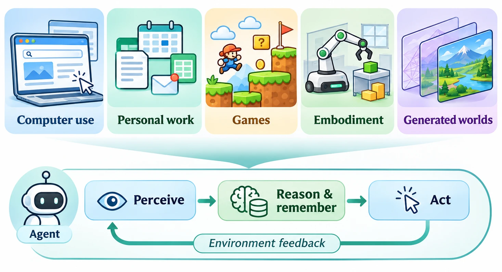

Computer use
Screen understanding, visual grounding, and vision-language-action models for web, desktop, and mobile interfaces.
Interactive agents across screens, games,
simulators, and generated worlds.
June 20 or 21, 2027 · Tentative
In person · Half-day format proposed

01 / The workshop
How do we turn pixels into grounded, reliable, and safe long-horizon actions?
AI agents operate computers and phones, carry out work across apps, play and help build games, and learn inside simulated and generated environments. These communities face a shared challenge: perceiving a world, reasoning about it, and acting within it.
AIDW brings them together to explore what transfers across worlds—and how generated worlds can train and test the next generation of agents—through keynotes, research papers, live demos, and a panel.
Workshop proposal under consideration. Acceptance, date, venue, and participation details will be updated when finalized.
Research directions
Screen understanding, visual grounding, and vision-language-action models for web, desktop, and mobile interfaces.
Long-horizon workflows, memory, personalization, proactive assistance, and human–agent collaboration.
Generalist game-playing agents, automated playtesting, NPCs, and agents that build levels, assets, and playable games.
Simulated homes, open 3D worlds, embodied reasoning, and transfer across simulated, generated, and real environments.
Controllable world models, long-horizon consistency, and training and evaluating agents in learned environments.
Across every world: learning from interaction · memory · reproducible evaluation · safety, security & privacy · accessibility
02 / Participate
Three proposed tracks welcome new results, work in progress, and interactive systems. Submission links will be announced.
Archival
5–8 pages, excluding references
In CVPR 2027 format, intended for the workshop proceedings. CVPR dual-submission and camera-ready policies apply.
Non-archival
Extended abstracts up to 4 pages
New or in-progress work, position papers, benchmarks, environment releases, and recently published papers.
Non-archival · AIDW Arcade
Up to 2 pages + a 3-minute video
Interactive agents, environments, and tools. A research paper is optional; existing systems and work in progress are welcome.
New work in both paper tracks is planned for double-blind review; demos use single-blind review. Accepted papers will be presented as posters, with three selected for oral talks.
Submissions should include an ethics statement covering interaction-data consent and privacy, software and asset licenses, safe testing on live platforms, and misuse potential.
Tentative · 2027 · All deadlines Anywhere on Earth (AoE)
03 / Meet & exchange
Preliminary morning program. The final time slot will be announced after workshop decisions.
04 / The community
Participation statuses below reflect the workshop proposal and remain subject to the final program.
Keynote · Computer use & work agents
The University of Hong Kong
Confirmed
Keynote · AI for games
Microsoft Research Cambridge
Tentatively confirmed
Keynote · Embodied simulation
Stanford University
Tentatively confirmed
Keynote · Generated worlds
University College London & Recursive
Tentatively confirmed
Panel · Personal & work agents
Stanford University
Tentatively confirmed
Panel · Evaluation & safety
The Ohio State University
Confirmed
Panel · Generalist agents
NVIDIA
Tentatively confirmed
University of Illinois Urbana-Champaign
University of Illinois Urbana-Champaign
University of California, Los Angeles
University of North Carolina at Chapel Hill
University of Illinois Urbana-Champaign
Apodex
University of Southern California
Tsinghua University
University of Illinois Urbana-Champaign
University of Illinois Urbana-Champaign
University of Illinois Urbana-Champaign
Northwestern University
University of North Carolina at Chapel Hill
The question that connects us
Join the conversation on generalization, learning, evaluation, and trust.
Find your track